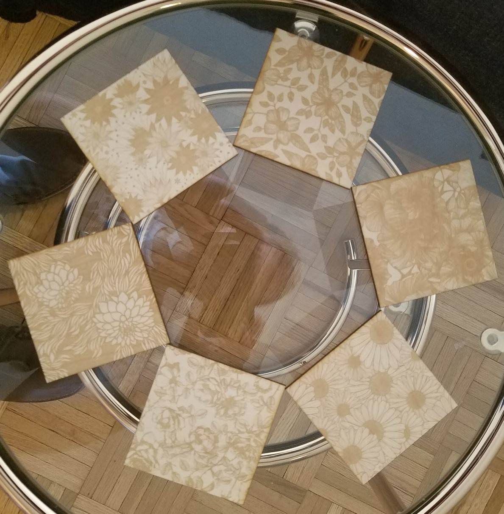

Projects
Some stuff I’ve spent a little or a lot of time on

I translated code from here into R, then tried to make shapes and patterns that continue to intrigue after repeated viewings

To learn how to use Shiny, I created this Penrose Tiling Interactive Shiny App
I was bored at training early on in my working days, and the instructor was wearing a houndstooth sweater. Naturally, I started thinking about how to make identical shapes that tile the plane, indirectly inspired by Escher (and directly inspired by a sweater). I asked a friend of mine to create a program where manipulating one side of a shape would also move the opposite side. This could be extended a lot further (curves, points, etc.) but even this simplified version could make some cool images


I took one output from the program (the first image shown below), and played around with it in PowerPoint to see if combining and recombining the image at different scales would turn up anything good


The following images are unrelated to the previous ones, but they seem to fit on this page. These are "imagined networks," byproducts of my actual research


This is a pretty stupid idea. A clockface packed with too much information, including Hours, Military Hours, Minutes/Seconds (in retrospect, maybe I should’ve done both), Month, Degrees, Direction, and Percentage. To make everything more confusing, I used many colors, made some elements very transparent, and added swirls to mislead your eyes. Explaining this stupid idea made me like it more
I've noodled around on some of the machines at UNC's Makerspaces as a break from my research, most often using the laser cutters and 3D printers. I've printed geometric shapes and figures showing both marginal and joint distributions. Since we get limited time on the laser cutters, I often end up making coaster sets or game pieces as gifts for friends. Some of these are my own designs, and others I've shamelessly stolen to make "laser adaptations."

This is a pretty stupid idea. A clockface packed with too much information, including Hours, Military Hours, Minutes/Seconds (in retrospect, maybe I should’ve done both), Month, Degrees, Direction, and Percentage. To make everything more confusing, I used many colors, made some elements very transparent, and added swirls to mislead your eyes. Explaining this stupid idea made me like it more
Occasionally I'll code something in R that might make a cool early desktop style animation, so I make it into an animation


As an undergraduate, I took an independent study course on soccer statistics with Christopher Anderson. Some of this work made it into a few blog posts. Those blog posts are included below, with a shoutout to the Wayback Machine for proving magic is real
1) Using Castrol Player Ratings To Predict Team Success in MLS
2) How Efficient Are Player Salaries in Major League Soccer?
3) Goal Production In Six Leagues
4) Comparing the Competitiveness of European Football Leagues
5) Is There A Connection Between Matches Played and Goals Per Game?
6) The Connection Between League Balance, Goals, and Talent